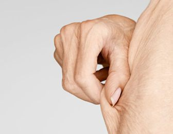

我的体质测试结果
我的体质是
气虚质
根据您的体质辨识结果，建议你从气虚质开始入手调理，调节气虚质要补脾气、健肺气、固肾气。

什么是气虚？
容易累，有点懒，经常气短，出虚汗。
「人活一口气」，气虚质是肺、脾、肾功能失调，导致气的化生不足。
气虚体质有什么困扰？
面色萎黄或淡白，目光少神，口淡，唇色少华。
舌苔淡白、胖嫩、边有齿痕。
头发没有光泽，易脱发。
肌肉松软，臀部下垂、乳房下垂、肚皮松软。
头晕、耳鸣、健忘。
多汗、自汗、出虚汗 ，运动更甚。
节气变化容易感冒。
月经不调或闭经。
没食欲，消化不良，经常腹胀，大便困难。
平素气短懒言，语音低怯，精神不振，肢体容易疲乏。
我为什么会气虚？
母亲怀孕时营养不足，妊娠反应强烈持久不能进食、早产、喂养不当。或父母有一方是气虚质。
大病、久病之后，元气大伤。
神过劳，长期过度用脑，劳伤心思，思虑伤脾。
形过劳，曾经是重体力劳动者或者是职业运动员。
长期节食会造成人体摄入营养不足，形成气虚。
喜欢吃冰冷寒凉、肥甘厚腻的食物且缺乏运动。
七情郁结，不开心，尤其是吃饭时生气。
气虚体质更容易患哪些疾病？
面部皮肤加速松弛、衰老，贫血，流产，生殖器脱垂，神经性尿频。
身体松软肥胖：气虚发胖多是吃的东西消化不掉形成痰湿，滞留皮下就是肥胖。
内脏下垂：气虚不能提升，肾、胃、子宫等内脏容易下垂。严重还会有重症肌无力。
慢性炎症：气虚女性一旦感染生殖系统炎症，很容易就转换成慢性。最典型就是慢性盆腔炎。
慢性疲劳综合征：活力降低，睡眠障碍，注意力不集中。肺气虚是关键因素。
鼻咽癌：气虚者经常感冒，从而导致反复鼻塞，再加上气滞于此，久之容易致病。
轻妍教你这么改善！
饮食调理：
常食益气健脾食物，比如果品类有大枣、葡萄干、苹果、龙眼肉、橙子等。蔬菜类有白扁豆、红薯、准山、莲子、白果、芡实、南瓜、包心菜、胡萝卜、土豆、莲藕、香菇等。肉食类有鸡肉、猪肚、牛肉、羊肉、鹌鹑、鹌鹑蛋等。水产类有淡水鱼、泥鳅、黄鳝等。调味类有麦芽糖、蜂蜜等。谷物类有糯米、小米、黄豆制品等。
气虚者要忌食山楂、佛手柑、大蒜、香菜、胡椒、薄荷、荷叶等，少食或不食金橘、橙子、生萝卜、砂仁、菊花等。
中药调理：
补气的中药：人参、桂圆、覆盆子、芡实、西洋参、党参、太子参、黄芪、白术、山药、白扁豆、甘草、红枣、刺五加、绞股蓝、红景天、茯苓、薏米等。
规律运动：
选择缓慢的有氧运动，慢跑，瑜伽，登山，散步等。避免过度运动，加重气虚体质。
起居有常：
谨避风寒，不要过劳。不熬夜，细嚼慢咽、七分饱。
关注穴位：
经常敲打足三里，益血补气又健脾。
精神养生：
遇事不要考虑过多，学会感受直觉，多移情于琴棋书画、唱歌跳舞、朋友交流。
网站首页
一键拨号
体质分析